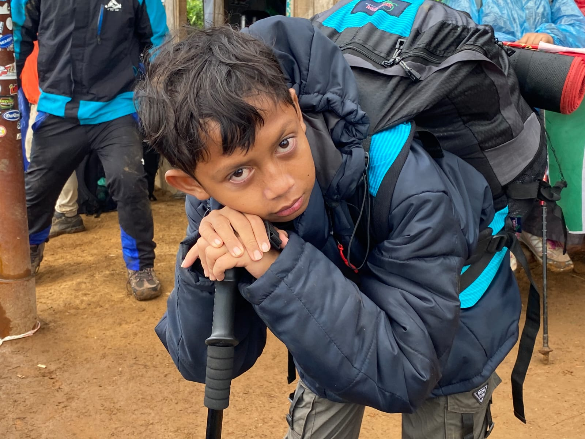

MUHAMMAD SAIFULLAH ARSYAD
Portofolio
Seorang Desainer & Developer yang fokus pada estetika...
loading...
Seorang Desainer & Developer yang fokus pada estetika...

MUHAMMAD SAIFULLAH ARSYAD
Halo! Saya Muhammad Saifullah Arsyad. Saya adalah seorang pelajar yang sangat antusias dengan dunia teknologi dan desain. Saya memiliki keahlian dalam Graphic Designer. Mari bekerja sama untuk membuat sesuatu yang luar biasa!
 Adobe Photoshop
Adobe Photoshop


Hari di mana perjalanan saya dimulai.
Mulai menemukan niat dan minat yang sangat besar di bidang desain grafis.
2024 (SMA Kelas 1)
Berkolaborasi dalam tim untuk membangun konsep cafe. Bertanggung jawab penuh atas identitas visual.
2025 (SMA Kelas 2)
Dipercaya untuk mengelola aspek visual acara, mulai dari mendesain logo dan poster.
Mengikuti kegiatan magang bertema Desain Grafis pada Semester 1. Di sini saya belajar mengaplikasikan desain di dunia profesional.
Sedang duduk di bangku Kelas 2 SMA, fokus mendalami teknik desain agar semakin paham dan ahli.